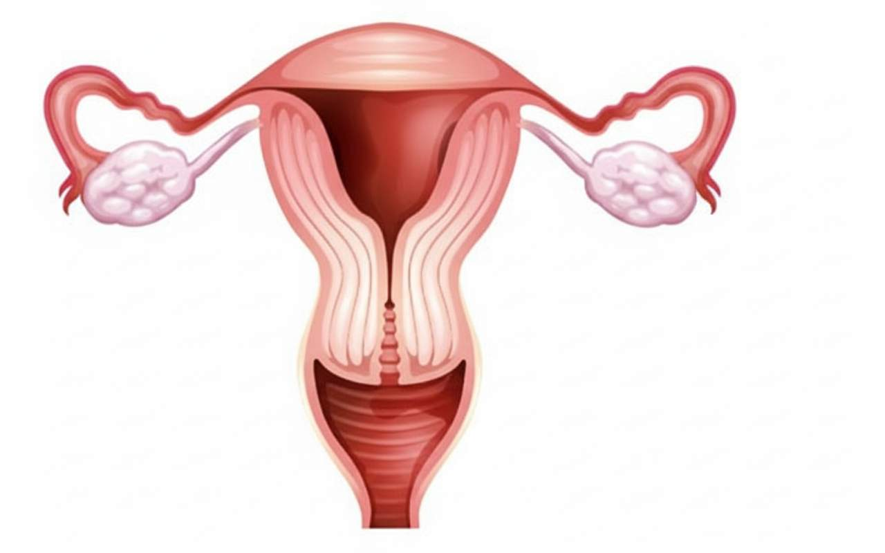
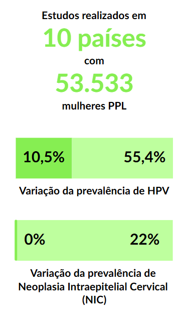
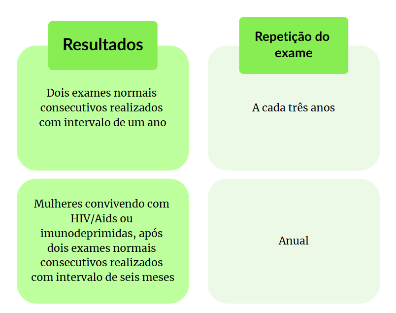
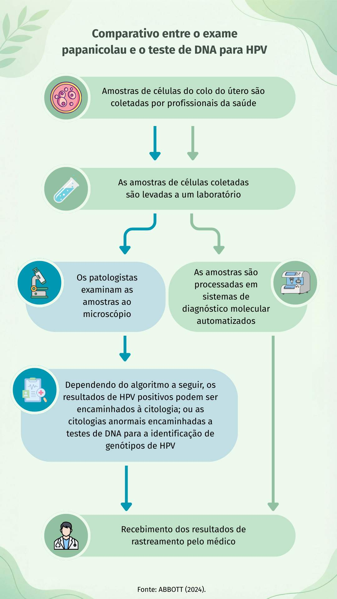
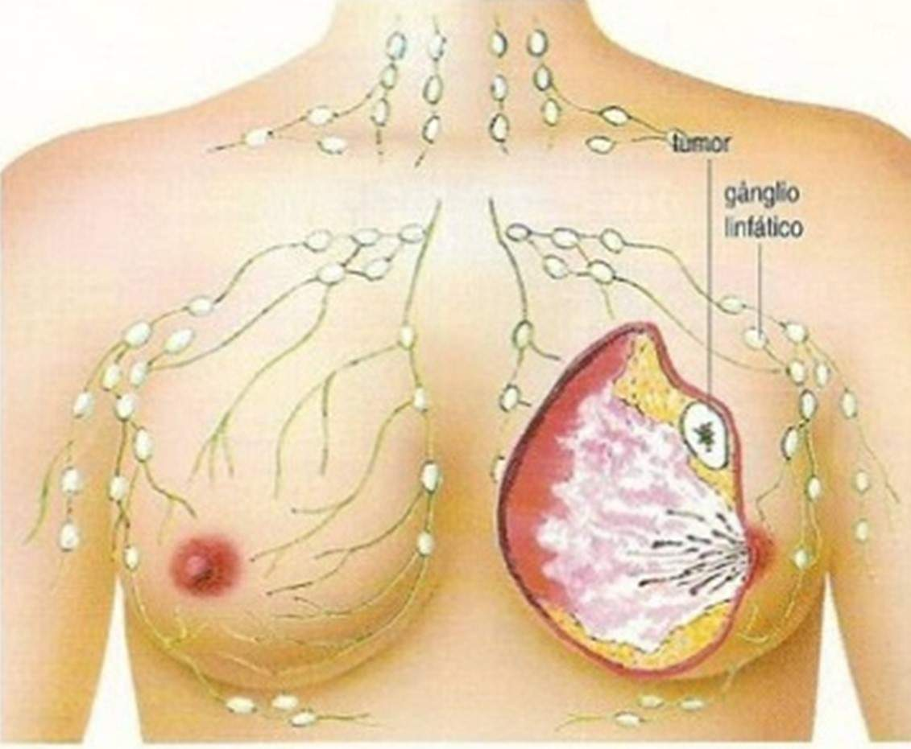
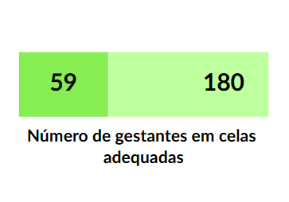
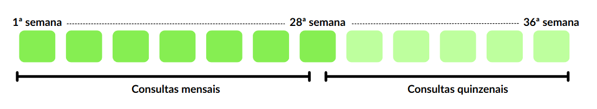

Apresentação da Unidade
Olá, estudante-trabalhador! Seja bem-vindo!
Nesta Unidade, abordaremos os procedimentos em saúde voltados às mulheres privadas de liberdade com base na Política Nacional de Atenção Integral à Saúde da Mulher (PNAISM) (2011). Nosso objetivo com este estudo é fortalecer as ações referentes à saúde reprodutiva, pré-natal, parto, puerpério e aos principais agravos no sistema prisional feminino brasileiro por meio da melhoria das ações prestadas pelos profissionais da equipe de Atenção Primária Prisional (eAPP), incorporando a discussão sobre a Política Nacional de Atenção às Mulheres em Situação de Privação de Liberdade e Egressas do Sistema Prisional (PNAMPE).
Objetivos de Aprendizagem da Unidade
Descrever formas de atendimento adequado às mulheres privadas de liberdade;
Conhecer o processo de encaminhamento da gestante privada de liberdade ao atendimento de urgência e emergência obstétrica de acordo com os fluxos da Rede de Atenção à Saúde;
Detectar meios acessíveis que possibilitem às mulheres privadas de liberdade regular a fecundidade com base no direito ao planejamento familiar;
Identificar agravos e doenças mais prevalentes nas mulheres privadas de liberdade;
Relacionar os protocolos terapêuticos nacionais para o cuidado da saúde nas doenças e agravos transmissíveis e não transmissíveis mais prevalentes;
Conhecer procedimentos em saúde voltados às mulheres gestantes e lactantes e à criança durante a permanência dela no estabelecimento penal.
Carga Horária de Estudo: 5 horas
2.1 Saúde da mulher privada de liberdade
Considerando a intensificação do aprisionamento de mulheres no Brasil e os desafios do profissional de saúde ao atuar no sistema prisional, faremos um estudo sobre as doenças específicas do sexo feminino: vulvovaginites, câncer de colo de útero e câncer de mama, com uma abordagem voltada às mulheres que estão privadas de liberdade.
Vamos lá?
2.2 Vulvovaginites e vaginoses
A vulvovaginite e a vaginose são as causas mais comuns de corrimento vaginal patológico. São afecções do epitélio estratificado da vulva e/ou vagina causadas por fungos, principalmente Candida albicans, bactérias anaeróbicas, em especial Gardnerella vaginalis, e o protozoário Trichomonas vaginalis (Brasil, 2022a). Essas afecções podem causar também estes sintomas: prurido vulvovaginal, alterações na cor e odor do corrimento e presença de irritação local (Brasil, 2022a).
Por serem casos de difícil diagnóstico e manejo, é comum que as mulheres privadas de liberdade procurem a APS Prisional (Atenção Primária à Saúde no Sistema Prisional) já em uso de medicamentos, muitas vezes automedicadas, o que dificulta o diagnóstico e a terapêutica adequada. Dessa forma, quando procuram o serviço de saúde, é importante que sejam orientadas sobre as diferenças entre as infecções do trato reprodutor e o corrimento fisiológico (Brasil, 2022a).
2.2.1 Diagnóstico das vulvovaginites e vaginoses
O diagnóstico das vulvovaginites e vaginoses é realizado por meio da anamnese, que é uma investigação minuciosa da história clínica da mulher. A anamnese avalia qual foi a data da última menstruação, como estão as práticas de higiene vaginal, quais medicamentos tópicos ou sistêmicos estão sendo usados, se foram utilizados potenciais agentes irritantes locais, comportamentos e práticas sexuais. Além disso, é importante realizar o exame ginecológico, no qual se observam as características do corrimento e se há ulcerações, edema e/ou eritema (Brasil, 2022a). Esse procedimento é viável na prática diária das Unidades Básicas de Saúde Prisional (UBSP) que têm eAPP e estrutura física adequada.
2.3 Câncer de colo do útero
Colo do útero é a parte localizada no final da vagina (Figura 1). Como está localizado entre os órgãos sexuais externos e internos, fica mais exposto ao risco de contrair doenças (Instituto Nacional de Câncer, 2022a).
O câncer de colo do útero, ou câncer cervical, tem como principais sintomas: sangramento vaginal, corrimento e dor.
Figura 1 - Sistema Reprodutor Feminino

Fonte: Santos (2024).O câncer de colo do útero é causado pela infecção genital persistente de alguns tipos oncogênicos do papilomavírus humano (HPV), transmitido por via sexual, e é de alta prevalência na população (Instituto Nacional de Câncer, 2022a).
2.3.1 Fatores de risco para câncer de colo do útero
Os fatores de risco conhecidos para o desenvolvimento do câncer de colo do útero são: início precoce da atividade sexual, multiplicidade de parceiros, higiene inadequada, padrão alimentar, tabagismo, uso de contraceptivos orais e baixa escolaridade. Estudos revelam que as mulheres brasileiras pretas, pardas e indígenas apresentam maior chance de diagnóstico em estádio avançado de câncer de colo do útero. Segundo Thuler, Aguiar e Bergmann (2014 apud Oliveira et al., 2024), em seu estudo, as mulheres pretas apresentaram 20% mais chance de enfrentar esse desfecho do que as brancas. Situação ainda mais grave foi observada entre mulheres indígenas. Segundo Pereira et al. (2014), das 90 mulheres pesquisadas, 5 tinham lesões pré-malignas, 1 tinha neoplasia intraepitelial cervical de grau III, 1 tinha adenocarcinoma in situ e outras 4 tinham infecção por HPV.

Já as mulheres em privação de liberdade têm uma prevalência maior de câncer de colo do útero em comparação com a população em geral. Estudos realizados em 10 países, com 53.533 mulheres privadas de liberdade, a prevalência de HPV entre essa população variou de 10,5% a 55,4%. A prevalência de Neoplasia Intraepitelial Cervical (NIC) diagnosticada variou entre 0% e 22%. As estimativas de prevalência de câncer de colo do útero foram pelo menos 100 vezes maiores do que nas populações que participaram de programas nacionais de rastreamento (Escobar; Plugge, 2020). Esses resultados apontam para uma associação entre condições socioeconômicas desfavoráveis, baixa escolaridade e acesso limitado aos exames citopatológicos cervicovaginais.
2.3.2 Como prevenir o câncer de colo do útero
A prevenção do câncer de colo do útero está relacionada à redução do risco de contágio pelo HPV. Dessa forma, o uso de preservativos durante a relação sexual e a inclusão da vacina contra o HPV no calendário vacinal, ofertada em uma única dose para meninos e meninas com idades entre 9 e 14 anos, são importantes formas de proteção contra o contágio pelo HPV.
Há, ainda, exames e testes disponíveis para detecção precoce do diagnóstico de lesões sugestivas de câncer, que viabilizam a investigação e o tratamento adequado (Instituto Nacional do Câncer, 2022a), como os apresentados a seguir.
2.3.2.1 Exame preventivo (papanicolau)
O papanicolau é um exame realizado para detectar alterações das células que dão origem ao câncer de colo do útero.
A indicação é que todas as mulheres que têm ou já tiveram atividade sexual, principalmente aquelas com idade entre 25 e 59 anos, incluindo as gestantes, façam o exame (Instituto Nacional de Câncer, 2022a). O Quadro 1 apresenta a periodicidade de realização do exame preventivo preconizada pelo Instituto Nacional de Câncer (INCA). Priorizar uma faixa etária, no entanto, não significa que o exame não seja ofertado para mulheres mais jovens ou mais velhas nem que elas não tenham que fazê-lo (Instituto Nacional de Câncer, 2016).
Quadro 1 - Periodicidade de realização do exame preventivo preconizada pelo INCA

Fonte: Instituto Nacional de Câncer (2016).2.3.2.2 Teste molecular
Incorporado ao Sistema Único de Saúde (SUS) em 2024, o teste molecular para detecção precoce do vírus HPV e para o rastreamento do câncer de colo do útero (Brasil, 2024a) ainda está em processo de implantação no país. O exame é realizado por meio da coleta de material do colo do útero e da vagina, assim como o papanicolau, e permite identificar a presença do DNA do vírus no trato genital feminino. Devido à sua eficácia, o teste molecular pode ser realizado com intervalos de rastreamento de até cinco anos, enquanto o papanicolau precisa ser realizado a cada três anos (Brasil, 2025a). A Figura 2 demonstra um comparativo entre o exame papanicolau e o teste de DNA para HPV.
Figura 2 - Comparativo entre o exame papanicolau e o teste de DNA para HPV

Fonte: Brasil (2024a).Reflexão
Há uma estrutura adequada para coleta do exame preventivo/teste molecular para HPV na sua instituição penal? Se não houver, sensibilize a gestão local! Agora você tem argumentos técnicos para solicitar melhorias estruturais.
2.3.3 Tratamento do câncer de colo do útero
A escolha da terapêutica para o câncer de colo do útero baseia-se no estadiamento da doença (método utilizado para identificar o tipo, a localização e o estágio em que o tumor se encontra), nas condições clínicas da mulher e em seu desejo reprodutivo (preservação da fertilidade). Poderá ser realizada a cirurgia, radioterapia ou a combinação dessas estratégias terapêuticas (Brasil, 2000).
2.4 Câncer de mama
Segundo o INCA (2022b), o câncer de mama é causado pela multiplicação desordenada de células anormais, que formam um tumor com potencial de invadir outros órgãos (Figura 3).
Os fatores de risco são idade, fatores endócrinos/história reprodutiva, fatores comportamentais/ambientais e fatores genéticos/hereditários (Adami et al., 2008 apud Instituto Nacional de Câncer, 2022b).

Fonte: Sociedade Brasileira de Oncologia Clínica (2014).2.4.1 Como prevenir o câncer de mama
Existem algumas formas de prevenir o câncer de mama, mas a principal delas é reduzindo a exposição aos fatores de risco modificáveis: evitar o consumo de bebidas alcoólicas e o tabagismo, manter uma alimentação saudável, praticar atividade física e manter o peso corporal adequado (Instituto Nacional de Câncer, 2022b).
A Política Nacional de Atenção Integral à Saúde das Pessoas Privadas de Liberdade no Sistema Prisional (PNAISP) (Brasil, 2014a) garante que cada instituição penal conte com uma eAPP, que oferta ações de promoção da saúde e prevenção de agravos. Caso não haja ambiência no local, a Unidade Básica de Saúde (UBS) do território poderá se responsabilizar por essas ações.
Você deve estar pensando em como proporcionar essas ações para as mulheres privadas de liberdade, correto? Acesse o QR Code e veja algumas sugestões que elaboramos para você.
Quadro 2 - Ações de prevenção do câncer de mama nas instituições penais
Clique para interagir
A Política Nacional de Segurança Alimentar e Nutricional (PNSAN) deve garantir a promoção da alimentação adequada e saudável por meio da oferta de alimentos variados e seguros, contribuindo para a manutenção da saúde (Silva; Carreiro, 2024). Algumas instituições penais contam com o apoio de uma nutricionista para garantir este direito.
Como fazer?
- Há a possibilidade de incentivar o cultivo de alimentos nos próprios estabelecimentos penais, gerando, inclusive, vagas de trabalho às mulheres privadas de liberdade (Silva; Carreiro, 2024).
Local
- Algumas instituições penais têm cozinhas próprias, outras são por oferta terceirizada. Quando o estabelecimento penal não tem cozinha, o alimento é preparado nas empresas terceirizadas ou provêm de outro estabelecimento penal (Silva; Carreiro, 2024).
Segundo a PNAISP, fisioterapeutas ou terapeutas ocupacionais podem integrar as equipes de saúde prisional e atuar no acompanhamento das atividades físicas das mulheres privadas de liberdade (Brasil, 2014a).
Como fazer?
- Utilizar o tempo permitido para o banho de sol em conformidade com as rotinas de cada instituição penal.
Local
- Utilizar o tempo permitido para o banho de sol em conformidade com as rotinas de cada instituição penal.
Um dos grandes desafios dos profissionais que compõem a eAPP é criar oportunidades para desenvolver ações de prevenção de doenças.
Como fazer?
- Realizar rodas de conversa e explanações às mulheres privadas de liberdade que estudam, fazem curso e trabalham, assim como entregar preservativos masculinos e/ou femininos àquelas que recebem visita íntima e distribuir panfletos com ilustrações explicativas.
Local
- Sala de aula, biblioteca, quadra de esportes, ou ainda, se permitido pela segurança local, na própria cela através das grades de proteção e/ou na área comum.
2.4.2 Diagnóstico precoce do câncer de mama
O diagnóstico precoce deve ser baseado no tripé: população alerta para sinais e sintomas suspeitos de câncer; profissionais de saúde igualmente alertas para sinais e sintomas suspeitos de câncer e capacitados para avaliar casos suspeitos; e serviços de saúde preparados para garantir a confirmação diagnóstica oportuna. A observação e a autopalpação ocasional das mamas, sem recomendação de técnica específica, podem contribuir para que as mulheres avaliem melhor o que é normal para elas e percebam possíveis mudanças (Instituto Nacional de Câncer, 2015).
2.4.2.1 Mamografia
No Brasil, desde 2015, a recomendação é de que a mamografia seja ofertada para mulheres entre 50 e 69 anos a cada dois anos, com o objetivo de diagnosticar o câncer no início para que o tratamento seja menos agressivo (Instituto Nacional de Câncer, 2015).
Prevenção do câncer de mama no sistema prisional- Incentivar alimentação saudável (hortas nos estabelecimentos penais);
- Organizar atividades físicas durante o banho de sol;
- Promover educação em saúde: rodas de conversa e distribuição de folhetos;
- Garantir mamografia bianual para mulheres de 50 a 69 anos.
2.4.3 Tratamento do câncer de mama
O tratamento do câncer de mama pode ser local (cirurgia com reconstrução mamária imediata e radioterapia) ou sistêmico (quimioterapia, hormonioterapia e terapia-alvo). Quando diagnosticado em fases iniciais, o câncer de mama geralmente tem maiores chances de cura. Quando há evidências de metástase, o tratamento tem como objetivos principais prolongar a sobrevida e melhorar a qualidade de vida da paciente (Brasil, 2024b).
Com essa importante colocação sobre as RAS, encerramos a abordagem sobre doenças femininas. A seguir, trataremos da saúde da mulher durante a gravidez, abrangendo aspectos da saúde materno-infantil.
2.5 Gestantes no sistema prisional
Em continuidade à nossa proposta, abordaremos o aprisionamento feminino, a maternidade nesse contexto e a presença de crianças no ambiente prisional. Vamos aos estudos?
O ambiente insalubre do sistema prisional tem efeitos na qualidade de vida das mulheres privadas de liberdade e ainda mais na das mulheres grávidas, já que as mudanças biopsicossociais inerentes à gestação pelas quais elas passam são acentuadas, muitas vezes negativamente, pelo aprisionamento (Mello, 2011 apud Chaves; Araújo, 2020). Por isso, deve-se dar preferência às penas não privativas de liberdade ou à prisão domiciliar quando a mulher for gestante ou tiver filhos menores (Brasil, 2016).
2.5.1 Atenção pré-natal e puerperal
O principal objetivo da atenção pré-natal e puerperal é acolher a mulher desde o início da gravidez para assegurar o nascimento de uma criança saudável e o bem-estar materno e neonatal. Entretanto, as mulheres em privação de liberdade enfrentam vários tipos de violação de direitos no período gravídico-puerperal, embora as condições ideais de tratamento estejam previstas na legislação brasileira e em regras internacionais, como as Regras de Bangkok.

Segundo o Departamento Penitenciário Nacional (Brasil, 2025b), na maioria dos estabelecimentos penais brasileiros, não há celas adequadas para as gestantes (apenas 59 gestantes privadas de liberdade de um total de 180 estão em celas adequadas para recebê-las);
Conforme a Lei nº 11.634, de 27 de dezembro de 2007, é direito das mulheres grávidas, que se estende também àquelas que estão em privação de liberdade, a vinculação prévia à maternidade na qual irão realizar o parto (Brasil, 2010, 2011 apud Militão; Kruno, 2014). Entretanto, muitas vezes, as gestantes nem mesmo são encaminhadas à maternidade para a realização do parto;
Outra situação de violação de direitos é as gestantes ainda serem algemadas durante o parto, mesmo a prática sendo contrária às Regras de Bangkok (Conselho Nacional de Justiça, 2016);

As consultas de pré-natal são mensais até a 28ª semana, quinzenais até a 36ª semana e semanais até o parto (Brasil, 2012a).
Instituição penal com eAPP: realizar acompanhamento da gestante de risco habitual intramuros. É importante lembrar que as anotações deverão ser realizadas tanto no e-SUS (ou outro prontuário utilizado no serviço de saúde prisional) quanto no cartão da gestante, que deverá acompanhá-la em todas as consultas intra e extramuros.
Instituição penal sem eAPP: encaminhar a gestante a uma UBS do território para que lhe seja oferecido o acesso ao atendimento pré-natal de risco habitual. Dessa forma, “as equipes de atenção básica devem se responsabilizar pela população de sua área de abrangência, mantendo a coordenação do cuidado mesmo quando a referida população necessita de atenção em outros serviços do sistema de saúde” (Brasil, 2012a, p. 37).
2.5.1.1 Algumas doenças que precisam ser investigadas no período gestacional
O objetivo da investigação de doenças no pré-natal, principalmente no primeiro trimestre de gestação, é assegurar uma gravidez saudável e tratar as complicações precocemente. Segundo Brasil (2012a, p. 38), “toda gestante deve ter asseguradas a solicitação, realização e avaliação em termo oportuno do resultado dos exames preconizados no atendimento pré-natal”. Dessa forma, abordaremos a seguir duas doenças que podem ser diagnosticadas com utilização de testes rápidos pela eAPP sem a necessidade de uma estrutura laboratorial complexa.
2.5.1.1.1 HIV/Aids na gestação
O teste para diagnóstico da infecção pelo HIV deve ser oferecido às gestantes na primeira consulta e no terceiro trimestre do pré-natal, visando ao adequado controle da infecção materna e à eficácia da profilaxia da transmissão vertical do vírus (Brasil, 2012a).
Nas instituições penais em que há equipe de saúde, os testes rápidos normalmente são ofertados na porta de entrada, possibilitando, assim, o diagnóstico da doença.
Caso a prática do aleitamento pela mulher vivendo com HIV seja identificada, suspender a amamentação imediatamente e avaliar “quanto à necessidade de realização de PEP, simultaneamente à investigação diagnóstica” (Brasil, 2022b, p. 124).
2.5.1.1.2 Sífilis gestacional
Sífilis é uma infecção bacteriana (Treponema pallidum) sistêmica, crônica e curável cuja transmissão se dá principalmente por contato sexual. Contudo, a infecção pode ser transmitida verticalmente para o feto durante a gestação e/ou parto (sífilis congênita) de uma mulher com sífilis não tratada ou tratada de forma inadequada. Na gestação, a sífilis pode provocar consequências severas, como abortamento, prematuridade, natimortalidade, manifestações congênitas ou tardias e morte do recém-nascido (Brasil, 2022a), portanto deve-se realizar a testagem rápida para início imediato do tratamento.
Para diagnóstico da sífilis, deve ser realizado um teste treponêmico e um teste não treponêmico.
Na gestação, a testagem para sífilis está preconizada:
- Na 1ª consulta de pré-natal, idealmente no 1º trimestre;
- No início do 3º trimestre (a partir da 28ª semana);
- No momento do parto; ou
- Em caso de aborto, exposição de risco e violência sexual (Fundação Oswaldo Cruz, 2023).
Para fins clínicos e assistenciais, alguns fatores são considerados para o tratamento adequado da gestante com sífilis, como:
- Administração de benzilpenicilina benzatina;
- Início do tratamento em até 30 dias antes do parto;
- Tratamento finalizado antes do parto;
- Esquema terapêutico de acordo com o estágio clínico da infecção;
- Respeito ao intervalo recomendado entre as doses (Brasil, 2022a, p. 81).
2.5.2 Rede Alyne
O Governo Federal lançou a Rede Alyne em setembro de 2024 com o objetivo de reduzir a mortalidade materna e expandir as ações voltadas para a saúde materno-infantil implementando medidas como:
- Reestruturação dos serviços de urgência e emergência para evitar a peregrinação das gestantes;
- Incentivo ao aleitamento materno;
- Investimento em pré-natal, com incorporação de novos exames, leitos canguru e modelo de financiamento por nascido vivo (Brasil, 2024c).
2.5.3 Momento do parto
Em 2005, a Lei do Acompanhante (Lei nº 11.108, de 7 de abril de 2005) garantiu a todas as parturientes (Brasil, 2005) o direito a um acompanhante durante o parto, sem necessidade de parentesco. Também é importante mencionar que a Lei nº 13.434, de 12 de abril de 2017, proibiu o uso de algemas em mulheres grávidas durante atos médico-hospitalares preparatórios para a realização do parto e durante o trabalho de parto, bem como em mulheres ao longo do período de puerpério imediato (Brasil, 2017).
Segundo Leal et al. (2016), na maioria dos estados brasileiros, a mulher grávida, no terceiro trimestre de gestação, é transferida de seu estabelecimento penal de origem para um que abrigue mulheres com filhos, de onde é levada ao hospital público para o parto e aonde retorna e permanece com seu filho por um período que varia de seis meses a seis anos (maioria entre seis meses a um ano). Depois desse período, geralmente a criança é entregue a familiares da mãe, que volta ao estabelecimento penal de origem.
Para as Regras de Bangkok (Conselho Nacional de Justiça, 2016), o regime prisional deve ser flexível o suficiente para atender às necessidades de gestantes, lactantes e mulheres com filhos, oferecendo serviços e instalações para o cuidado das crianças.
Na mesma direção, a Política Nacional de Atenção às Mulheres em Situação de Privação de Liberdade e Egressas do Sistema Prisional (PNAMPE), instituída pela Portaria Interministerial nº 210, de 16 de janeiro de 2014, determina a inserção da mulher grávida, lactante ou mãe com filho em local específico e adequado, com a disponibilização de atividades compatíveis com sua situação, incluindo atividades lúdicas e pedagógicas, coordenadas por equipe multidisciplinar (Brasil, 2014b).
Resumo do atendimento à gestante privada de liberdade:
- Pré-natal intramuros: consultas mensais (até 28ª semana), quinzenais (até 36ª semana) e semanais (até o parto);
- Anotações obrigatórias no e-SUS ou outro prontuário utilizado no serviço de saúde prisional e no cartão da gestante;
- Acesso garantido à Rede Alyne para consultas e exames externos;
- Partos humanizados, sem uso de algemas.
2.6 Puerpério
Puerpério é o período de até 42 dias que decorre do parto, durante o qual ocorrem modificações internas e externas, incluindo transformações psíquicas (Brasil, 2006). Nesse momento, a eAPP deve desenvolver ações efetivas e eficazes para atender às necessidades de saúde dessas mulheres, qualificando o cuidado por meio de:
- Avaliação do estado de saúde da mulher e do recém-nascido;
- Orientação e apoio à puérpera na amamentação;
- Orientação sobre os cuidados básicos com o recém-nascido;
- Orientação quanto ao planejamento familiar;
- Identificação de situações de risco ou intercorrências (Brasil, 2006).
2.6.1 Aleitamento materno
O aleitamento materno deve ser estimulado, a não ser que haja contraindicações, tendo em vista sua importância para o desenvolvimento infantil e para o desenvolvimento do vínculo afetivo entre mãe e filho (Conselho Nacional de Justiça, 2016). “Outrossim destaca-se a importância do aleitamento materno para a prevenção de infecções e proteção contra o desenvolvimento de doenças imunológicas e crônicas” (Jacob, 2010 apud Ramos; Carvalho, 2018, p. 251).
É recomendável o aleitamento materno exclusivo até os seis meses de idade. Depois desse tempo, os alimentos devem ser introduzidos progressivamente (Brasil, 2020b). Nesse sentido, a PNAMPE tem como uma de suas diretrizes “a atenção específica à maternidade e à criança intramuros, observando o respeito ao período mínimo de amamentação e de convivência da mulher com seu filho” (Brasil, 2014b). Nesse mesmo sentido, o Conselho Nacional de Política Criminal e Penitenciária (CNPCP) (Brasil, 2009) salienta que a “amamentação [...] deve ser tratada de forma privilegiada, eis que dela depende a saúde do corpo e da ‘psique’ da criança”. Corroborando a garantia da permanência da criança no sistema prisional, a Lei de Execução Penal (LEP) define que o estabelecimento penal feminino deve ter seção para gestante e parturiente e creche para abrigar crianças maiores de seis meses e menores de sete anos (Brasil, 1984). Dessa forma, às crianças que permanecem abrigadas com suas mães deve-se assegurar o acompanhamento de seu crescimento e desenvolvimento de acordo com as diretrizes fixadas pelo Ministério da Saúde (Brasil, 2012b).
2.7 Planejamento reprodutivo
A Lei nº 9.263, de 12 de janeiro de 1996, estabelece o planejamento reprodutivo como um direito de todo cidadão, entendido “como o conjunto de ações de regulação da fecundidade que garanta direitos iguais de constituição, limitação ou aumento da prole pela mulher, pelo homem ou pelo casal” (Brasil, 1996). Na Atenção Básica, o planejamento reprodutivo envolve três tipos de atividades que devem ser desenvolvidas de forma integrada: aconselhamento, atividades educativas e atividades clínicas (Brasil, 2013). Considerando que o planejamento pode ser realizado pelo homem e pela mulher isoladamente, essas ações devem ser realizadas tanto em estabelecimentos penais masculinos como femininos.
Nas instituições penais, em que a frequência às consultas é reduzida devido z organização do sistema, toda visita ao serviço de saúde é uma oportunidade para a prática de ações educativas, aconselhamento e acompanhamento clínico e para apresentar os anticoncepcionais disponíveis.
Vamos falar um pouco sobre anticoncepcionais?
Os profissionais da eAPP devem procurar compreender as expectativas das pessoas quanto à reprodução, ajudá-las a concretizar essas expectativas, respeitando a escolha do método mais apropriado às suas necessidades e circunstâncias de vida (Brasil, 2013), e possibilitar-lhes acesso ao anticoncepcional escolhido.
2.7.1 Anticoncepção no sistema prisional
O planejamento reprodutivo contribui para a prática sexual saudável e possibilita o espaçamento das gestações e a recuperação do organismo da mulher após o parto, melhorando as condições que ela tem para cuidar dos filhos e realizar outras atividades (Brasil, 2013). A seguir, apresentamos os anticoncepcionais disponíveis para escolha adequada a cada mulher.
Clique para interagir
Com o objetivo de garantir o acesso das mulheres à saúde sexual e reprodutiva, o Ministério da Saúde publicou a Portaria nº 2.234, de 23 de julho de 2018, que instituiu a “Agenda Mais Acesso, Cuidado, Informação e Respeito à Saúde das Mulheres”. Essa agenda tem como objetivo geral ampliar e fortalecer a atenção à saúde sexual e reprodutiva das mulheres, em todos os ciclos de vida, com ou sem deficiência, além de incluir ações estratégicas que envolvam os homens na trajetória reprodutiva e sexual, visando à redução de agravos (Brasil, 2018).
Encerramos esta Unidade convidando você, caro estudante-trabalhador, a refletir sobre as possibilidades de oportunizar ao homem e à mulher em privação de liberdade o acesso às ações de educação e comunicação em saúde sexual e reprodutiva, considerando as questões éticas e legais e otimizando também ações de planejamento, execução e avaliação das atividades com vistas ao bem-estar dessa população.
2.8 Experiências exitosas
Encerramento da Unidade
Encerramos a Unidade sobre a assistência à saúde das mulheres. Tentamos criar ações aplicáveis à sua rotina de trabalho. É de conhecimento amplo que o sistema prisional feminino precisa ser repensado para garantir o cuidado integral à saúde das mulheres privadas de liberdade, haja vista que essa população tem demandas e necessidades peculiares. A remodelação desse panorama pode ter início no cuidado diário. Cada exame garantido, cada orientação oferecida, cada parto respeitado é uma vitória silenciosa pela equidade. Você, estudante-trabalhador, é agente dessa transformação.
Referências importantes
BRASIL. Ministério da Saúde. Secretaria de Vigilância em Saúde. Departamento de Doenças de Condições Crônicas e Infecções Sexualmente Transmissíveis. Protocolo clínico e diretrizes terapêuticas para atenção integral às pessoas com infecções sexualmente transmissíveis (IST). Brasília: Ministério da Saúde, 2022a. Disponível em: https://www.gov.br/aids/pt-br/central-de-conteudo/pcdts/2022/ist/pcdt-ist-2022_isbn-1.pdf . Acesso em: 25 set. 2025.
BRASIL. Ministério da Justiça. Departamento Penitenciário Nacional. Diretrizes para a convivência mãe-filho/a no sistema prisional. Brasília, 2016.
BRASIL. Ministério da Saúde. Secretaria de Atenção à Saúde. Departamento de Ações Programáticas Estratégicas. Pré-natal e Puerpério: atenção qualificada e humanizada - manual técnico. Brasília: Ministério da Saúde, 2006.
INSTITUTO NACIONAL DE CÂNCER (Brasil). Coordenação de Prevenção e Vigilância. Divisão de Detecção Precoce e Apoio à Organização de Rede. Diretrizes para a detecção precoce do câncer de mama no Brasil. Rio de Janeiro: INCA, 2015.
Referências
ABBOTT. HPV - Você no Controle: exames preventivos são a melhor arma contra o câncer de colo de útero. 2024. Disponível em: https://www.abbottbrasil.com.br/corpnewsroom/diagnostic-testing/hpv-voce-no-controle.html . Acesso em: 25 set. 2025.
AGÊNCIA BRASÍLIA. Cura que brota do chão: Farmácia Viva do DF produz medicamento natural para dor de garganta. 2025. Disponível em: https://saude.df.gov.br/web/guest/w/cura-que-brota-do-ch%C3%A3o-farm%C3%A1cia-viva-do-df-produz-medicamento-natural-para-dor-de-garganta . Acesso em: 19 ago. 2025.
BRASIL. Ministério da Saúde. Ministério da Saúde oferta tecnologia inovadora 100% nacional para detectar câncer do colo do útero no SUS. gov.br, 15 ago. 2025a. Disponível em: https://www.gov.br/saude/pt-br/assuntos/noticias/2025/agosto/ministerio-da-saude-oferta-tecnologia-inovadora-100-nacional-para-detectar-cancer-do-colo-do-utero-no-sus . Acesso em: 3 out. 2025.
BRASIL. Ministério da Justiça e Segurança Pública. Departamento Penitenciário Nacional. Relatório de Informações Penais. 17º Ciclo SISDEPEN, 2º Semestre de 2024. RELIPEN. Brasília: SENAPPEN, 2025b. Disponível em: https://www.gov.br/senappen/pt-br/servicos/sisdepen/relatorios/relipen/relipen-2o-semestre-de-2024.pdf . Acesso em: 25 set. 2025.
BRASIL. Ministério da Saúde. Comissão Nacional de Incorporação de Tecnologias no Sistema Único de Saúde (CONITEC). Prevenção de câncer de colo de útero: Ministério da Saúde incorpora teste inovador para detecção do HPV em mulheres. gov.br, 11 mar. 2024a. Disponível em: https://www.gov.br/conitec/pt-br/assuntos/noticias/2024/marco/prevencao-de-cancer-de-colo-de-utero-ministerio-da-saude-incorpora-teste-inovador-para-deteccao-do-hpv-em-mulheres/ . Acesso em: 19 ago. 2025.
BRASIL. Ministério da Saúde. Portaria Conjunta SAES/SECTICS nº 17, de 25 de novembro de 2024. Aprova o Protocolo Clínico e Diretrizes Terapêuticas do Câncer de Mama. Diário Oficial da União, Brasília, DF, 5 dez. 2024b. Disponível em: https://bvsms.saude.gov.br/bvs/saudelegis/Saes/2024/poc0017_05_12_2024.html . Acesso em: 3 jul. 2025.
BRASIL. Ministério da Saúde. Portaria GM/MS nº 5.350, de 12 de setembro de 2024. Altera a Portaria de Consolidação GM/MS nº 3, de 28 de setembro de 2017, para dispor sobre a Rede Alyne. Diário Oficial da União, Brasília, DF, 13 set. 2024c. Disponível em: https://bvsms.saude.gov.br/bvs/saudelegis/gm/2024/prt5350_13_09_2024.html . Acesso em: 19 ago. 2025.
BRASIL. Ministério da Saúde. Secretaria de Vigilância em Saúde e Ambiente. Departamento de HIV/Aids, Tuberculose, Hepatites Virais e Infecções Sexualmente Transmissíveis. Nota técnica nº 14/2023. Dispõe sobre atualização da recomendação do intervalo entre doses de Benzilpenicilina benzatina no tratamento de sífilis em gestantes. 2023.
BRASIL. Ministério da Saúde. Secretaria de Vigilância em Saúde. Departamento de Doenças de Condições Crônicas e Infecções Sexualmente Transmissíveis. Protocolo clínico e diretrizes terapêuticas para atenção integral às pessoas com infecções sexualmente transmissíveis (IST). Brasília: Ministério da Saúde, 2022a. Disponível em: https://www.gov.br/aids/pt-br/central-de-conteudo/pcdts/2022/ist/pcdt-ist-2022_isbn-1.pdf . Acesso em: 25 set. 2025.
BRASIL. Ministério da Saúde. Secretaria de Ciência, Tecnologia, Inovação e Insumos Estratégicos em Saúde. Secretaria de Vigilância em Saúde. Protocolo Clínico e Diretrizes Terapêuticas para prevenção da transmissão vertical de HIV, sífilis e hepatites virais. Brasília: Ministério da Saúde, 2022b. Disponível em: https://bvsms.saude.gov.br/bvs/publicacoes/protocolo_clinico_hiv_sifilis_hepatites.pdf . Acesso em: 28 set. 2025.
BRASIL. Ministério da Saúde. Ofício Circular nº 11/2020/CGIST/.DCCI/SVS/MS. Atualização das recomendações de terapia antirretroviral (TARV) em gestantes vivendo com HIV. Brasília, 27 mar. 2020a. Disponível em: https://mncp.org.br/wp-content/uploads/2020/03/Atualiza%C3%A7%C3%A3o-das-recomenda%C3%A7%C3%B5es-de-terapia-antirretroviral-TARV-em-gestantes-vivendo-com-HIV-1.pdf . Acesso em: 19 ago. 2025.
BRASIL. Ministério da Saúde. Secretaria de Atenção Primaria à Saúde. Departamento de Promoção da Saúde. Guia alimentar para crianças brasileiras menores de 2 anos. Brasília: Ministério da Saúde, 2020b.
BRASIL. Ministério da Saúde. Portaria nº 2.234, de 23 de julho de 2018. Institui a “Agenda Mais Acesso, Cuidado, Informação e Respeito à Saúde das Mulheres” e prevê o repasse no exercício financeiro de 2018, de recursos de custeio para Fundos Municipais de Saúde, mediante cumprimento de requisitos estabelecidos em edital de chamada pública. Diário Oficial da União, Brasília, DF, 14 set. 2018. Disponível em: https://bvsms.saude.gov.br/bvs/saudelegis/gm/2018/prt2234_14_09_2018.html . Acesso em: 19 ago. 2025.
BRASIL. Lei nº 13.434, de 12 de abril de 2017. Acrescenta parágrafo único ao art. 292 do Decreto-Lei nº 3.689, de 3 de outubro de 1941 (Código de Processo Penal), para vedar o uso de algemas em mulheres grávidas durante o parto e em mulheres durante a fase de puerpério imediato. Diário Oficial da União, Brasília, DF, 13 abr. 2017. Disponível em: https://www.planalto.gov.br/ccivil_03/_ato2015-2018/2017/lei/l13434.htm . Acesso em: 19 ago. 2025.
BRASIL. Ministério da Justiça. Departamento Penitenciário Nacional. Diretrizes para a convivência mãe-filho/a no sistema prisional. Brasília, 2016.
BRASIL. Ministério da Saúde. Política nacional de atenção integral à saúde das pessoas privadas de liberdade no sistema prisional. Brasília: Ministério da Saúde, 2014a. Disponível em: https://www.saude.mg.gov.br/wp-content/uploads/2025/01/Cartilha-PNAISP.pdf . Acesso em: 19 ago. 2025.
BRASIL. Ministério da Justiça e Segurança Pública. Portaria Interministerial nº 210, de 16 de janeiro de 2014. Institui a Política Nacional de Atenção às Mulheres em Situação de Privação de Liberdade e Egressas do Sistema Prisional, e dá outras providências. Diário Oficial da União, Brasília, DF, 17 jan. 2014b. Disponível em: https://dspace.mj.gov.br/bitstream/1/361/3/PRI_GM_2014_210.html . Acesso em: 19 ago. 2025.
BRASIL. Ministério da Saúde. Secretaria de Atenção à Saúde. Departamento de Atenção Básica. Saúde sexual e saúde reprodutiva. Brasília: Ministério da Saúde, 2013. (Cadernos de Atenção Básica, nº 26). Disponível em: https://bvsms.saude.gov.br/bvs/publicacoes/saude_sexual_saude_reprodutiva.pdf . Acesso em: 19 ago. 2025.
BRASIL. Ministério da Saúde. Secretaria de Atenção à Saúde. Departamento de Atenção Básica. Atenção ao pré-natal de baixo risco. Brasília: Ministério da Saúde, 2012a. (Série A. Normas e Manuais Técnicos. Cadernos de Atenção Básica, nº 32).
BRASIL. Ministério da Saúde. Secretaria de Atenção à Saúde. Departamento de Atenção Básica. Saúde da criança: crescimento e desenvolvimento. Brasília: Ministério da Saúde, 2012b. (Cadernos de Atenção Básica, nº 33). Disponível em: https://bvsms.saude.gov.br/bvs/publicacoes/saude_crianca_crescimento_desenvolvimento.pdf . Acesso em: 19 ago. 2025.
BRASIL. Ministério da Saúde. Secretaria de Atenção à Saúde. Departamento de Ações Programáticas Estratégicas. Política Nacional de Atenção Integral à Saúde da Mulher: Princípios e Diretrizes. Brasília: Editora do Ministério da Saúde, 2011. Disponível em: https://bvsms.saude.gov.br/bvs/publicacoes/politica_nacional_mulher_principios_diretrizes.pdf . Acesso em: 25 set. 2025.
BRASIL. Conselho Nacional de Política Criminal e Penitenciária. Resolução nº 3, de 15 de julho de 2009. Dispõe sobre as orientações relativas à estada, permanência e posterior encaminhamento das(os) filhas(os) das mulheres encarceradas. Diário Oficial da União, Brasília, DF, 16 jul. 2009. Disponível em: https://diariofiscal.com.br/ZpNbw3dk20XgIKXVGacL5NS8haIoH5PqbJKZaawfaDwCm/legislacaofederal/resolucao/2009/cnpcp.0003.html . Acesso em: 4 set. 2025.
BRASIL. Ministério da Saúde. Secretaria de Atenção à Saúde. Departamento de Ações Programáticas Estratégicas. Pré-natal e Puerpério: atenção qualificada e humanizada - manual técnico. Brasília: Ministério da Saúde, 2006.
BRASIL. Lei nº 11.108, de 7 de abril de 2005. Altera a Lei nº 8.080, de 19 de setembro de 1990, para garantir às parturientes o direito à presença de acompanhante durante o trabalho de parto, parto e pós-parto imediato, no âmbito do SUS. Diário Oficial da União, Brasília, DF, 8 abr. 2005. Disponível em: https://www.planalto.gov.br/ccivil_03/_ato2004-2006/2005/lei/l11108.htm . Acesso em: 19 ago. 2025.
BRASIL. Instituto Nacional do Câncer. Câncer do Colo do Útero: Condutas do INCA. Revista Brasileira de Cancerologia, v. 46, n. 4, p. 351-354, 2000. Disponível em: https://rbc.inca.gov.br/index.php/revista/article/view/2415 . Acesso em: 25 set. 2025.
BRASIL. Lei nº 9.263, de 12 de janeiro de 1996. Regula o §7º do art. 226 da Constituição Federal, que trata do planejamento familiar, estabelece penalidades e dá outras providências. Diário Oficial da União, Brasília, DF, 15 jan. 1996. Disponível em: https://www.planalto.gov.br/ccivil_03/Leis/L9263.htm . Acesso em: 19 ago. 2025.
BRASIL. Lei nº 7.210, de 11 de julho de 1984. Lei de Execução Penal. Diário Oficial da União, Brasília, DF, 13 jul. 1984. Disponível em: http://www.planalto.gov.br/ccivil_03/leis/l7210.htm . Acesso em: 19 ago. 2025.
CHAVES, L. H.; ARAÚJO, I. C. A. Gestação e maternidade em cárcere: cuidados de saúde a partir do olhar das mulheres presas em uma unidade materno-infantil. Physis: Revista de Saúde Coletiva, v. 30, n. 1, e300112, 2020. Disponível em: https://www.scielo.br/j/physis/a/7z5kcxDVhFxksgJcGRRxQqv/ . Acesso em: 19 ago. 2025.
CONSELHO NACIONAL DE JUSTIÇA. Regras de Bangkok. Brasília: Conselho Nacional de Justiça, 2016. Disponível em: https://www.cnj.jus.br/wp-content/uploads/2019/09/cd8bc11ffdcbc397c32eecdc40afbb74.pdf . Acesso em: 19 ago. 2025.
ESCOBAR, N.; PLUGGE, E. Prevalence of human papillomavirus infection, cervical intraepithelial neoplasia and cervical cancer in imprisoned women worldwide: a systematic review and meta-analysis. Journal of Epidemiology & Community Health, v. 74, n. 1, p. 95-102, 2020. Disponível em: https://jech.bmj.com/content/74/1/95.abstract . Acesso em: 19 ago. 2025.
FUNDAÇÃO OSWALDO CRUZ. Instituto Nacional de Saúde da Mulher, da Criança e do Adolescente Fernandes Figueira. Portal de Boas Práticas em Saúde da Mulher, da Criança e do Adolescente. Sífilis: diagnóstico e tratamento na gestação. Rio de Janeiro, 2023. Disponível em: https://portaldeboaspraticas.iff.fiocruz.br/atencao-mulher/sifilis-teste-rapido-e-tratamento-na-gestacao/ . Acesso em: 25 set. 2025.
FUNDAÇÃO PARAIBANA DE GESTÃO EM SAÚDE. Projeto Recomeço: reeducandos do sistema prisional da Paraíba realizaram cirurgias no Edson Ramalho através do Planejamento Familiar. João Pessoa: Fundação Paraibana de Gestão em Saúde, 2024. Disponível em: https://pbsaude.pb.gov.br/noticias/projeto-recomeco-reeducandos-do-sistema-prisional-da-paraiba-realizaram-cirurgias-no-edson-ramalho-atraves-do-planejamento-familiar . Acesso em: 19 ago. 2025.
INSTITUTO NACIONAL DE CÂNCER (Brasil). Câncer do colo do útero. Rio de Janeiro, 2022a. Disponível em: https://www.gov.br/inca/pt-br/assuntos/cancer/tipos/colo-do-utero . Acesso em: 25 set. 2025.
INSTITUTO NACIONAL DE CÂNCER (Brasil). Câncer de mama. Rio de Janeiro, 2022b. Disponível em: https://www.gov.br/inca/pt-br/assuntos/cancer/tipos/mama . Acesso em: 26 set. 2025.
INSTITUTO NACIONAL DE CÂNCER (Brasil). Coordenação de Prevenção e Vigilância. Divisão de Detecção Precoce e Apoio à Organização de Rede. Diretrizes brasileiras para o rastreamento do câncer do colo do útero. 2. ed. Rio de Janeiro: INCA, 2016.
INSTITUTO NACIONAL DE CÂNCER (Brasil). Coordenação de Prevenção e Vigilância. Divisão de Detecção Precoce e Apoio à Organização de Rede. Diretrizes para a detecção precoce do câncer de mama no Brasil. Rio de Janeiro: INCA, 2015.
LEAL, M. C. et al. Nascer na prisão: gestação e parto atrás das grades no Brasil. Ciência & Saúde Coletiva, v. 21, n. 7, p. 2061-2070, 2016. Disponível em: https://www.scielo.br/j/csc/a/PpqmzBJWf5KMTfzT37nt5Bk/ . Acesso em: 19 ago. 2025.
LEITE, H. Cultivo na Fazenda da Papuda viabiliza produção de mais de 50 mil fitoterápicos. 2025. Disponível em: https://www.saude.df.gov.br/web/guest/w/cultivo-na-fazenda-da-papuda-viabiliza-produção-de-mais-de-50-mil-fitoterápicos . Acesso em: 19 ago. 2025.
MILITÃO, L. P.; KRUNO, R. B. Vivendo a gestação dentro de um sistema prisional. Saúde (Santa Maria), v. 40, n. 1, p. 75-84, 2014. Disponível em: https://periodicos.ufsm.br/revistasaude/article/view/9180 . Acesso em: 19 ago. 2025.
OLIVEIRA, N. P. D. et al. Desigualdades sociais no diagnóstico do câncer do colo do útero no Brasil: um estudo de base hospitalar. Ciência & Saúde Coletiva, v. 29, n. 6, e03872023, 2024. Disponível em: https://www.scielo.br/j/csc/a/6NVc97K57dr9LDzWWhXxBPq/ . Acesso em: 19 ago. 2025.
PEREIRA, E. R. et al. Saúde sexual, reprodutiva e aspectos socioculturais de mulheres indígenas. Revista Brasileira em Promoção da Saúde, v. 27, n. 4, p. 445-454, 2014. Disponível em: https://ojs.unifor.br/RBPS/article/view/2829 . Acesso em: 19 ago. 2025.
RAMOS, J. M. C.; CARVALHO, G. B. V. Maternidade no cárcere: desafios do sistema carcerário brasileiro. Revista da Faculdade de Direito da UFRGS, n. 39, p. 240-260, 2018. Disponível em: https://seer.ufrgs.br/revfacdir/article/view/70125 . Acesso em: 19 ago. 2025.
SANTOS, V. S. Sistema Reprodutor. Biologia Net, c2024. Disponível em: https://www.biologianet.com/anatomia-fisiologia-animal/sistema-reprodutor.htm . Acesso em: 25 set. 2025.
SÃO PAULO (Estado). Mães em Cárcere. São Paulo: Defensoria Pública do Estado de São Paulo, 2017. Disponível em: https://www.cnj.jus.br/wp-content/uploads/2019/09/Projeto-Mães-em-Cárcere-Cartilha-Ana-Carolina-Schwan.pdf . Acesso em: 19 ago. 2025.
SILVA, J. P. L.; CARREIRO, H. K. C. Panorama nacional de alimentação e acesso à água no sistema prisional. Brasília: Ministério da Justiça e Segurança Pública; Secretaria Nacional de Políticas Penais, 2024.
SILVEIRA, G. Distrito Federal inaugura horto agroflorestal no Ministério da Saúde. 2025. Disponível em: https://www.saude.df.gov.br/web/guest/w/distrito-federal-inaugura-horto-agroflorestal-no-ministerio-da-saude . Acesso em: 19 ago. 2025.
SOCIEDADE BRASILEIRA DE ONCOLOGIA CLÍNICA. Tratamentos e efeitos colaterais do câncer de mama. 2014. Disponível em: https://www.sboc.org.br/noticias/item/420-tratamentos-e-efeitos-colaterais-do-cancer-de-mama . Acesso em: 2 out. 2025.
Minicurrículo do Autor

Enfermeira graduada pela Universidade Estadual de Mato Grosso do Sul (UEMS) em 1998, com uma
sólida carreira construída
no serviço público e na gestão em saúde. Possuo dupla especialização: em Administração
Hospitalar pelo Centro
Universitário Anhanguera (2009) e em Atenção Básica em Saúde da Família pela Universidade
Federal de Mato Grosso do Sul
(UFMS, 2012).
Servidora Pública Estadual desde 2009, consolidei minha trajetória na Agência Penitenciária
do Estado de Mato Grosso do
Sul (AGEPEN/MS), onde atuei por 15 anos no Módulo de Saúde do Complexo Penitenciário.
Atualmente, desde 2024, exerço a
função estratégica de Coordenadora da Assistência Farmacêutica Especializada na unidade
CAFÉ.
Além da atuação assistencial e administrativa, possuo experiência acadêmica junto à Fundação
Oswaldo Cruz (FIOCRUZ),
onde atuei como bolsista e tutora apoiadora entre 2013 e 2015, contribuindo para a formação
de profissionais no Curso de
Especialização em Gestão de Saúde do Sistema Prisional.
Currículo Lattes: http://lattes.cnpq.br/1326954249967100